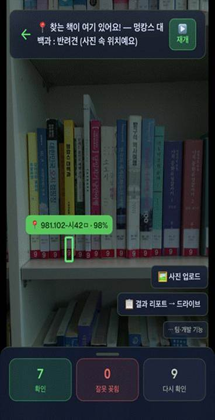
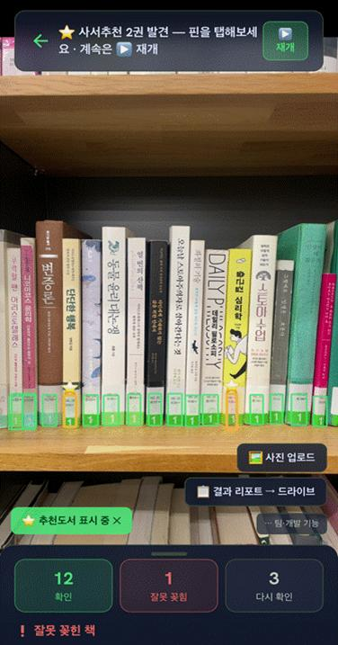
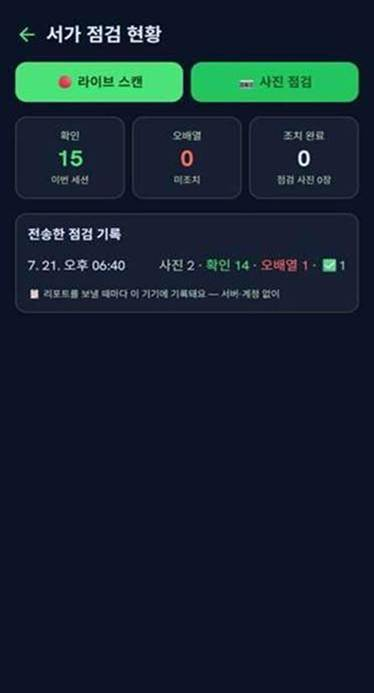
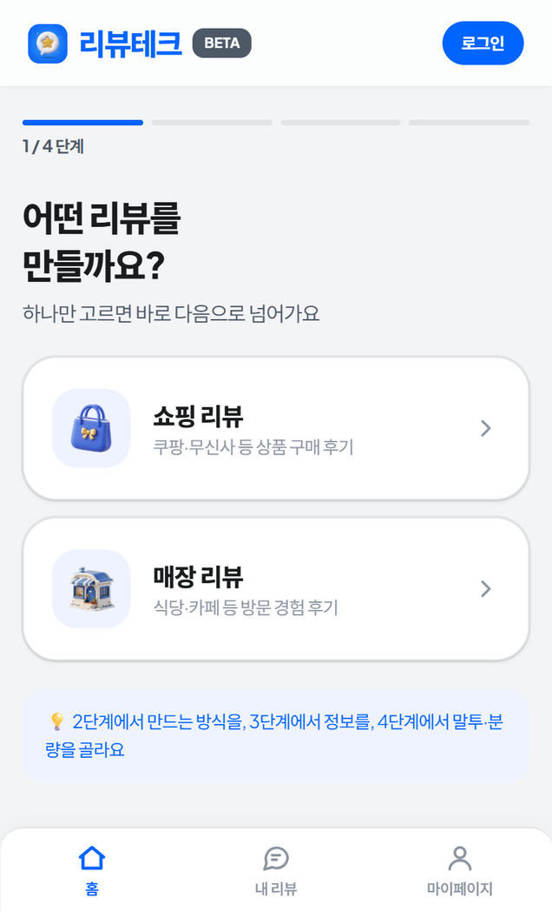
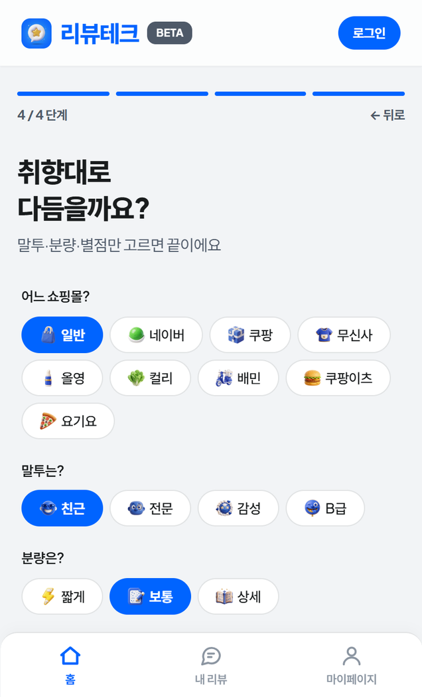
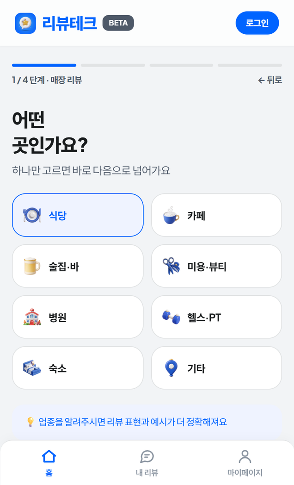
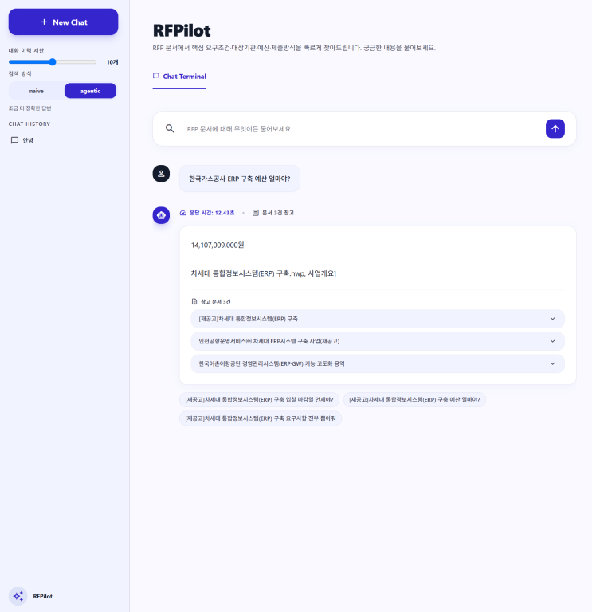
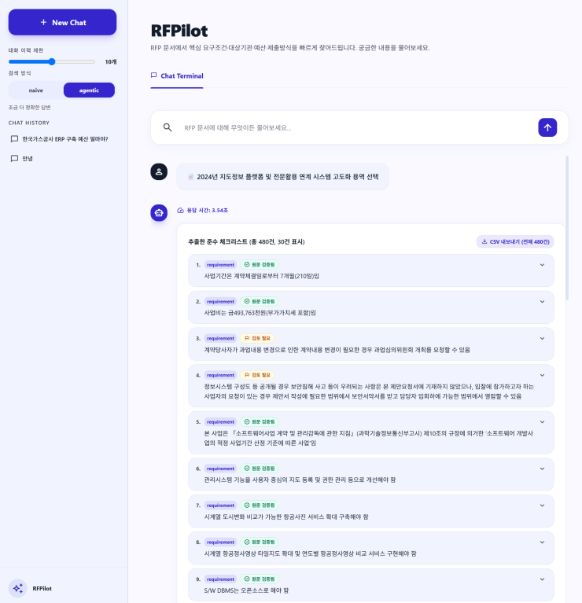

PORTFOLIO — 이아인 / AI ENGINEER
문제를 정의하고 끝까지 만들어내는 개발자
01. LIBAR
책이 사라지는 가장 흔한 경로는 도난이 아니라 잘못 꽂히는 것입니다. 서가 사진 한 장을 폰 브라우저 안의 AI 세 개가 검출·판독·대조해 오배열을 잡아냅니다. 서버 호출은 0회입니다.



도서관 데이터 기반 온디바이스 AI 서비스
초록은 제자리, 빨강은 잘못 꽂힘. 리포트는 앱이 현장에서 자동 생성한다.
02. REVIEWTECH
LLM에 한 번 시키면 “AI 티”가 납니다. 리뷰테크는 생성 한 번으로 끝내지 않고 retrieve → generate → critique → revise 네 단계로 품질을 시스템으로 관리합니다.



하나만 고르면 바로 다음으로. 유저가 하는 일은 4단계 선택이 전부다.
검수 LLM이 “AI가 쓴 티”가 나는 문장을 잡아내고, 걸린 문장만 다시 쓴다.
03. BIDMATE — RFPILOT
공공기관 입찰 공고서는 수백 쪽짜리 한글 파일입니다. 이것을 AI가 대신 읽고 원문 근거와 함께 답하는 챗봇을 5명이 만들었고, 저는 AI를 채점할 ‘정답지’와 문서에 붙이는 ‘이름표’를 맡았습니다.


답마다 응답 시간과 참고 문서 건수가 붙는다. 근거 없는 답은 내놓지 않는다.
체크리스트의 ‘원문 검증됨 / 검토 필요’ 판정 기준이 제가 만든 정답지다.